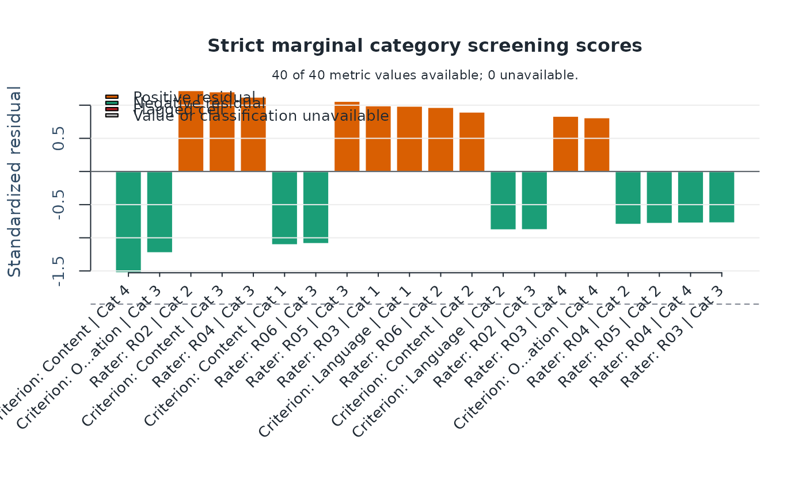
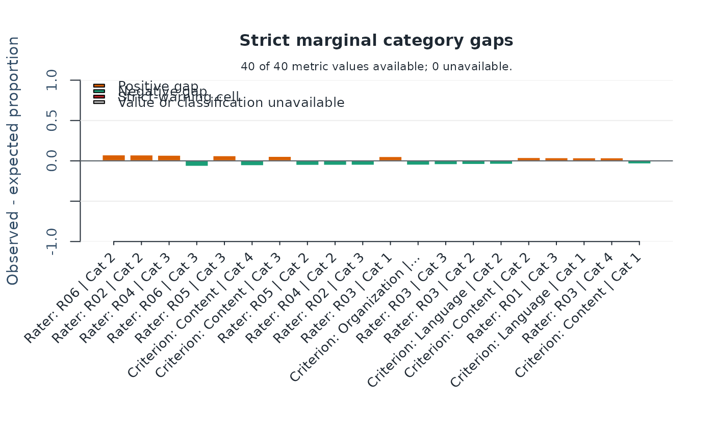

Plot strict marginal-fit follow-up cells using base R
Arguments
- x
Output from
fit_mfrm()ordiagnose_mfrm().- diagnostics
Optional output from
diagnose_mfrm()whenxismfrm_fit.- plot_type
"std_residual"or"prop_diff".- top_n
Maximum cells shown.
- facet
Optional facet name used to keep only matching facet-level rows. When
NULL, the plot uses the mixed top-cell table returned by the strict marginal screen.- main
Compatibility title argument. Omitted or
NULLkeeps the default title. Existing calls remain supported without a deprecation warning. For new code, prefertitle; do not supply both arguments.- palette
Optional named color overrides. Recognized names:
positive,negative,flag.- label_angle
X-axis label angle.
- preset
Visual preset (
"standard","publication","compact", or"monochrome").- draw
If
TRUE, draw with base graphics.- title
Plot title. Omit it to keep the default, supply one character string to replace it, or use
NULL(or"") to suppress it. This changes only the heading; numerical results, reference lines, subtitles and interpretation notes remain. Bothmainandtitleexplicitly supplied is an error, even if equal orNULL. Positional legacy arguments retain their order; use the exact nametitle.
Details
This helper visualizes the largest first-order strict marginal-fit cells from
diagnose_mfrm(..., diagnostic_mode = "both") or
diagnostic_mode = "marginal_fit".
The "std_residual" view ranks cells by the absolute standardized residual
from posterior-integrated expected category counts. The "prop_diff" view
ranks cells by the absolute observed-minus-expected proportion gap and plots
their signed gaps. Both views apply the facet filter before ranking all cells.
The returned full_table retains all candidate rows; retention records
available/unavailable values for the selected metric. Undefined values are
not zero residuals, and grey bars/labels indicate unavailable values or flags.
Use this plot after summary(diagnostics) indicates strict marginal flags.
The display is exploratory: it highlights which facet/category cells deserve
follow-up, but it is not a standalone inferential test.
Interpreting output
Positive bars mean the observed category usage exceeded the posterior- expected marginal usage for that cell.
Negative bars mean the observed usage fell below the posterior-expected marginal usage.
Red bars indicate the current strict marginal warning rule was triggered by
|StdResidual| >= abs_z_warn.
Typical workflow
Fit with
fit_mfrm()usingmethod = "MML"forRSM/PCM.Run
diagnose_mfrm()withdiagnostic_mode = "both".Use
plot_marginal_fit()to inspect the largest strict marginal cells.Follow up with
rating_scale_table()or substantive design review.
Further guidance
For a plot-selection guide and a longer walkthrough, see
mfrmr_visual_diagnostics and
vignette("mfrmr-visual-diagnostics", package = "mfrmr").
Session plot defaults
Set options(mfrmr.plot_preset = "publication") to choose a session default
for plotting functions that expose the common preset argument. The
supported values are "standard", "publication", "compact" and
"monochrome". Precedence is an explicit call argument, then the session
option, then "standard". For example, preset = "standard" overrides
a session set to "monochrome". Explicit preset = NULL retains the
earlier package-default behavior; it does not read the session option.
Invalid session values cause an error only when that option is needed.
The category-curve, data-quality, fit-review, connectivity and network
routes of plot() for report bundles use the same option through ....
Plots without a common preset argument, including extended-model plots
with their own palette controls, keep their own settings. This option
selects a preset, not a universal theme or a guarantee that all renderers
implement every appearance control identically.
New plot payloads retain the resolved preset for supported saved-data
rendering. Converting an existing payload with as_ggplot() uses its saved
appearance, even after the session option changes. A call that creates a
new plot from a fit or statistical result uses the current default.
For a reproducible script, supply preset explicitly or set the option in
that script. Saving only the fitted model does not save a session option.
No global ggplot theme is changed.
Restore previous settings with old <- options(mfrmr.plot_preset = "monochrome") followed by options(old). Use
options(mfrmr.plot_preset = NULL) to remove the option. The preset changes
appearance, not estimates, confidence levels or diagnostic thresholds.
Examples
# \donttest{
# Load the package and example ratings
library(mfrmr)
toy <- load_mfrmr_data("example_operational")
# Fit the model
fit <- fit_mfrm(
data = toy,
person = "Person",
facets = c("Rater", "Criterion"),
score = "Score",
method = "MML",
model = "RSM"
)
# Compute diagnostics once for the following checks
diagnostics <- diagnose_mfrm(fit)
# Which score categories occur more or less often than the model expects?
plot_marginal_fit(diagnostics)

# Positive bars: more frequent than expected; negative bars: less frequent
# Optional: show observed-minus-expected proportions instead
# Run this command separately to inspect the second figure
plot_marginal_fit(diagnostics, plot_type = "prop_diff")

# }